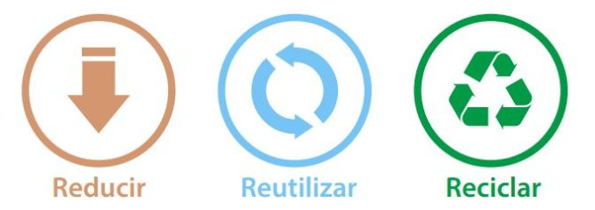
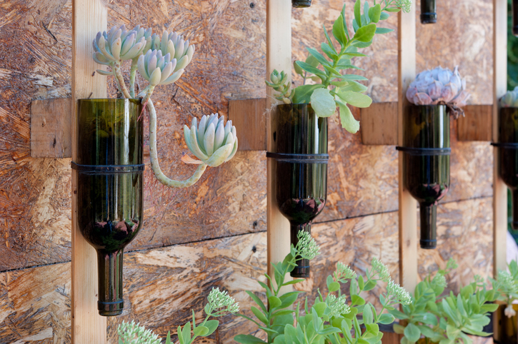
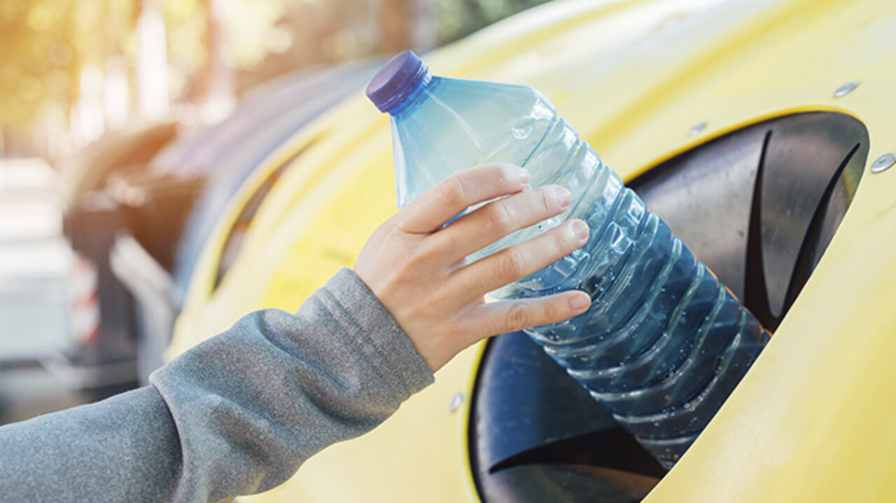
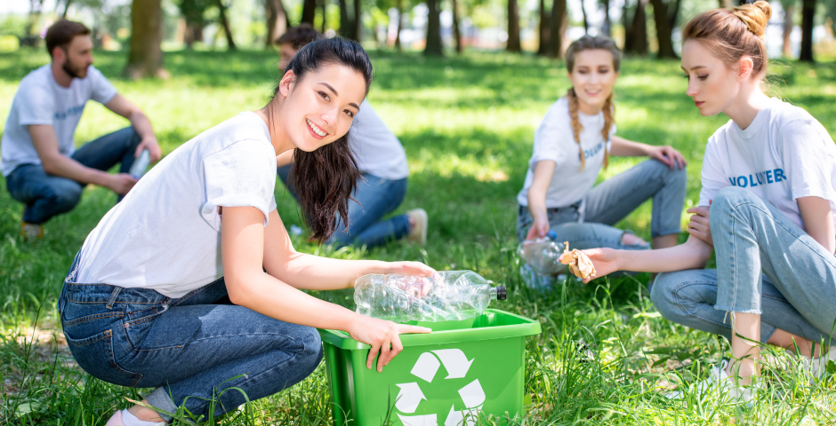
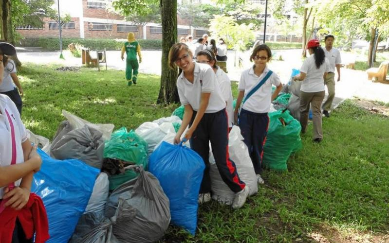

"Reusar, Reutilizar y Reciclar", el planeta nos necesita.
Cada ciudadano genera por término medio 1kg. de basura al día, lo que da 365 kg. por persona al año,
y a su vez 40.150.000.000 kg. al año en Perú. Esta basura doméstica va a parar a vertederos,
a la calle y a veces a incineradoras.
Buena parte de esa basura, el 60% del volumen, lo constituyen envases y embalajes, en su mayoría
de un solo uso, normalmente fabricados a partir de materias primas no renovables, o que aun
siendo renovables se están explotando a un ritmo superior al de su regeneración (p. Ej. La
madera para la fabricación de celulosa), y difícilmente reciclables una vez se han utilizado.
A lo anterior tenemos que añadir que en el hogar también se producen residuos derivados de
pinturas, disolventes, insecticidas, productos de limpieza. Toda esta basura puede ser llevada
a vertederos, pero ocupa mucho terreno y contamina suelos y aguas. Incinerarla tampoco es la
solución, pues se emiten contaminantes atmosféricos y se producen cenizas y escorias muy tóxicas.
Se trata, en definitiva, de que pongamos en práctica la consigna de las tres erres, Reducir,
Reutilizar y Reciclar, en este orden de importancia.




En pocas palabras, las 3R te ayudan a tirar menos basura, ahorrar dinero y ser un consumidor más responsable,
así reduciendo tu huella de carbono. Y lo mejor de todo es que es muy fácil de seguir, ya que sólo tiene
tres pasos: reducir, reutilizar y reciclar.
Reusar
Cuando hablamos de reducir lo que estamos diciendo es que se debe tratar de reducir o simplificar el consumo
de los productos directos, o sea, todo aquello que se compra y se consume, ya que esto tiene una relación
directa con los desperdicios, a la vez que también la tiene con nuestro bolsillo. Por ejemplo, en vez de
comprar 6 botellas pequeñas de una bebida, se puede conseguir una o dos grandes, teniendo el mismo producto
pero menos envases sobre los que preocuparse.
Reutilizar
Al decir reutilizar, nos estamos refiriendo a poder volver a utilizar las cosas y darles la
mayor utilidad posible antes de que llegue la hora de deshacernos de ellas, dado que al disminuir
el volumen de la basura. Esta tarea suele ser la que menos atención recibe y es una de las mas
importantes, que también ayuda mucho la economía en casa.
Reciclar
La ultima de las tareas es la de reciclar, que consiste en el proceso de someter los materiales a un proceso en el cual se
puedan volver a utilizar, reduciendo de forma verdaderamente significativa la utilización de
nuevos materiales, y con ello, mas basura en un futuro. Las sociedades del mundo siempre han
producido residuos, pero es ahora, en la sociedad de consumo, cuando el volumen de las basuras
ha crecido de forma desorbitada. Además se ha incrementado su toxicidad hasta convertirse
en un gravísimo problema. Estamos inmersos en la cultura del usar y tirar, y en la basura de
cada día están los recursos que dentro de poco echaremos en falta.
Reciclar no es solo una acción, es la preservación del mundo y sus recursos.
Reciclar es más que una acción, es el valor de la responsabilidad por preservar los recursos naturales.
Impacto de envases y plásticos
Entendemos por Envases, aquellos materiales tales como latas (refresco, de conserva etc.),
envases Tetrabrik y botellas de plástico y de vidrio. Es importante el reciclado de estos materiales pues
para fabricarlos, de alguna u otra manera, son los que más contaminan al planeta, pues para producir una
tonelada se gasta más de 15,000 Kwh, se producen 5 toneladas de residuos minerales que van al suelo, y vapores
que producen lluvia ácida.
El vidrio, se puede reciclar hasta 40 ó 50 veces; en promedio, estos materiales tardan entre 300 y 600 años
en degradarse si no se les da un tratamiento especial.
